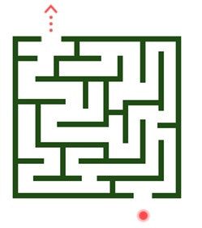

X

404
Looks like you are in a maze.
Use the keyboard to control the ball to maze exit to return to the home, or
Go back home
Looks like you are in a maze.
Use the keyboard to control the ball to maze exit to return to the home, or